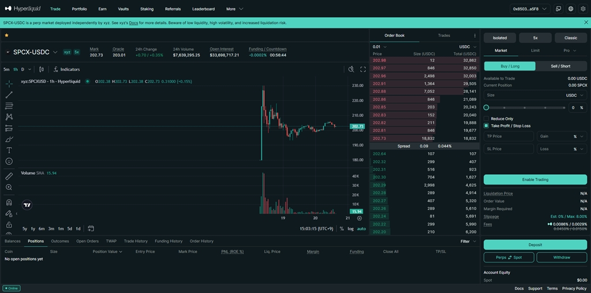

What is SPCX-USDC?
SPCX-USDC is a perpetual market referencing SpaceX-related exposure on Hyperliquid. It is not the same as directly owning private SpaceX shares.
SpaceX exposure has reached the perpetual market era. The SPCX-USDC perp market is currently visible and tradable on Hyperliquid.

SPCX-USDC market screen on Hyperliquid. Market conditions can change quickly.
SPCX-USDC is a perpetual market referencing SpaceX-related exposure on Hyperliquid. It is not the same as directly owning private SpaceX shares.
Private company exposure appearing in crypto perpetual markets shows how onchain trading is expanding beyond traditional crypto assets.
You can check the SPCX market through Hyperliquid using the referral link below.
https://app.hyperliquid.xyz/join/CODE1234Years ago, trading SpaceX-style exposure on a decentralized perpetual exchange would have sounded impossible. Now the line between private markets, crypto rails, and global trading culture keeps getting thinner.
Start Hyperliquid →